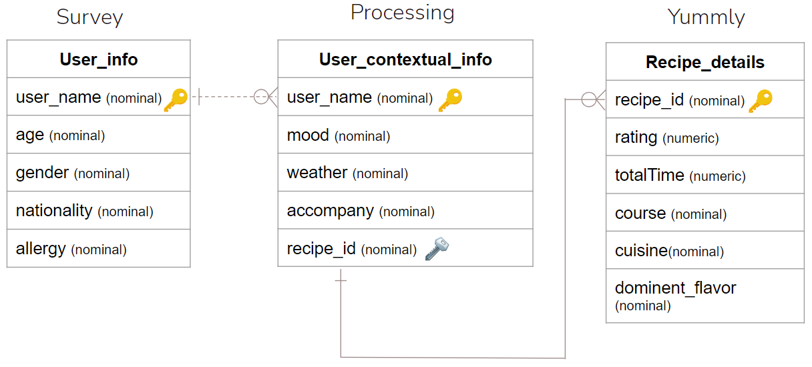

MoodPal
MoodPal endeavors to provide a personalized food recommendation depending on the users' mood and contextual data such as the weather and the number of commensals. MoodPal aims to recommend to the user precisely what they would want at the moment, creating a lighthearted experience that enriches their daily life. To be able to produce the concept, artificial intelligence (AI) was implemented since previous studies had shown that applying different techniques of AI to recommender systems enhance the overall results of the recommendations and users' experience (Zhang, Lu, and Jin, 2020). Hence, by training different models (J48, ClassificationViaRegression, and SoftMax) and comparing their accuracy, a final model was assembled to classify and provide the user's best recommendation.
